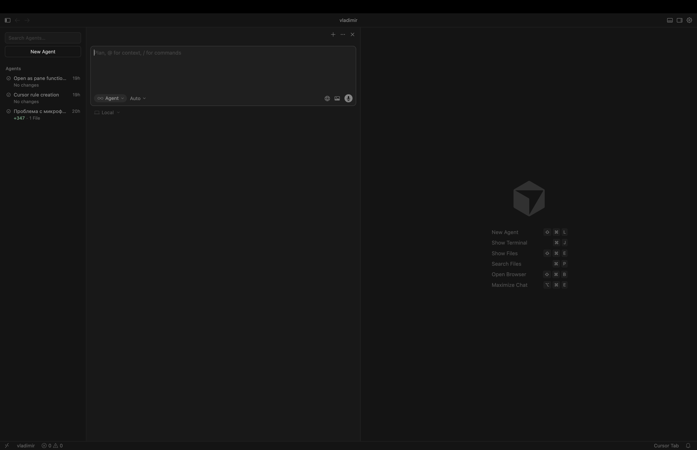

Человек мира · Инвестор · Путешественник
Владимир Корляков
CEO «МТР-Сервис». Соединяю стратегическое управление, инвестиции, семью и путешествия, сохраняя фокус на развитии, балансе и долгосрочных результатах.

О себе
Я CEO компании «МТР-Сервис» и подхожу к бизнесу системно: через стратегию, людей и устойчивый рост. Для меня важно не просто достигать целей, а создавать процессы, которые работают в долгую и усиливают команду.
Я человек мира: много путешествую, изучаю разные подходы к жизни и бизнесу, и переношу лучшие практики в свою работу. Как инвестор, я смотрю на решения через призму горизонта, рисков и возможностей, уделяя внимание качеству активов и дисциплине.
Семья, медитации и внутренний баланс для меня так же важны, как и профессиональные результаты. Я верю, что сильные решения рождаются там, где есть ясность, энергия и гармония между делом, близкими и личным развитием.